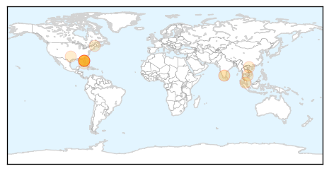
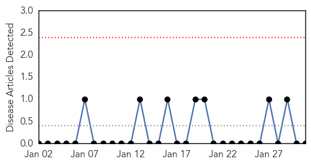
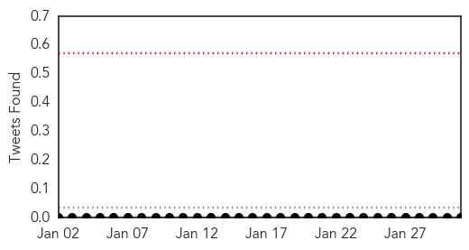

Dengue Fever
30-Day Web Trend
2 alerts, 0 warnings

30-Day Twitter Trend
2 alerts, 0 warnings

Article Locations
Article Confidences

Top Articles:
- 0.945
- Dengue: people visiting other States screened
- 0.892
- Genetically modified mozzies used to curb outbreaks - Nation
- 0.847
- Don’t blame us for not detecting dengue in patients earlier, say docs - Nation
- 0.715
- High time we clipped the mozzies' wings - The Star Says
- 0.685
- Fear in Florida over plan to release genetical modified mosquitoes - World
- 0.599
- Infant Becomes Latest Person to Die in Cambodia Mass HIV Infection
- 0.599
- GMO mosquito plan sparks debate in Florida
- 0.571
- Infant Becomes Latest Person to Die in Cambodia's Mass HIV Infection
- 0.571
- Infant Becomes Latest Person to Die in Cambodia's Mass HIV Infection
- 0.571
- Infant Becomes Latest Person to Die in Cambodia's Mass HIV Infection
- 0.536
- Uproar over genetically modified mosquitoes
- 0.529
- GMO Mosquito Plan Sparks Debate in Florida
Top Tweets:
-
No tweets found for Jan 31, 2015
Mumps
30-Day Web Trend
0 alerts, 0 warnings

30-Day Twitter Trend
0 alerts, 0 warnings

Article Locations

Article Confidences

Top Articles:
-
No articles found for Jan 31, 2015
Top Tweets:
-
No tweets found for Jan 31, 2015